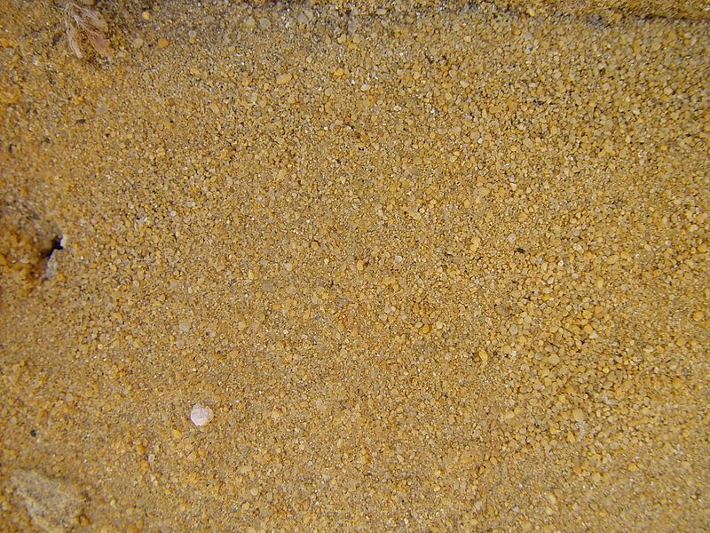

Back to the home page
Our original sand brand color brand!
Obtained by hand our yellow sand is harvested and bred in antarctica
selectively to find the most intense yellow color for any of your purposes!
A classic choice, this sand can make any occasion more gritty, be it a bath,
an important meeting at work, or even a sad funeral can become more gritty
with our wonderful yellow sand!

Customer Reviews:
xXxJOHNNYDEPPMURDERERxXx says, "This sand helped make my mothers funeral become much more gritty."
spellicup says, "Sand was very effective at suffocating good luck charlie."